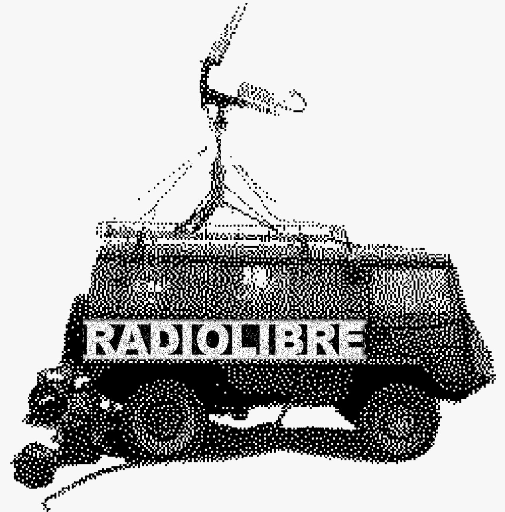

La Radio, lugar común
Creamos de manera colaborativa transmisiónes para compartir lo que esté pasando. Shared net.radio streams by socially involved groups desde/from *subamerica #TodoEsRadio!

Creamos de manera colaborativa transmisiónes para compartir lo que esté pasando. Shared net.radio streams by socially involved groups desde/from *subamerica #TodoEsRadio!